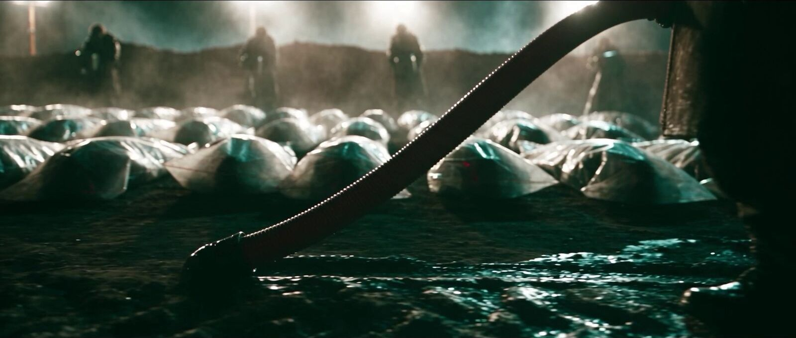
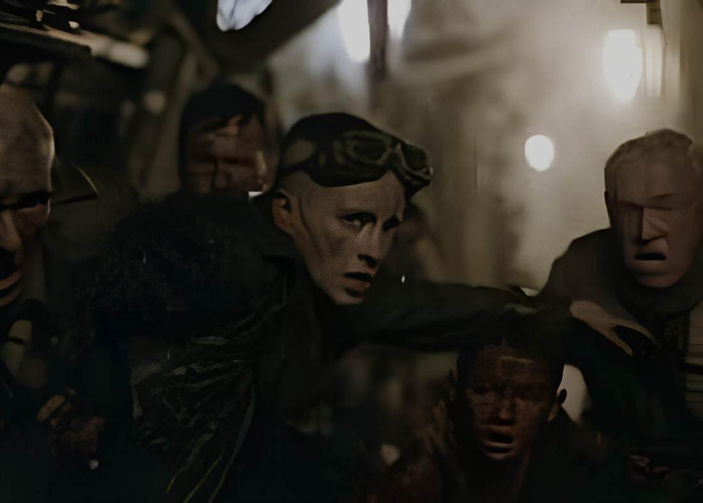
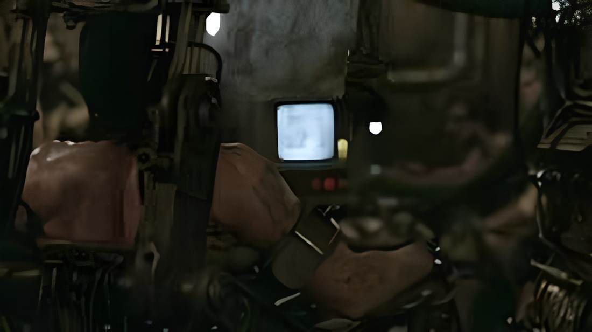
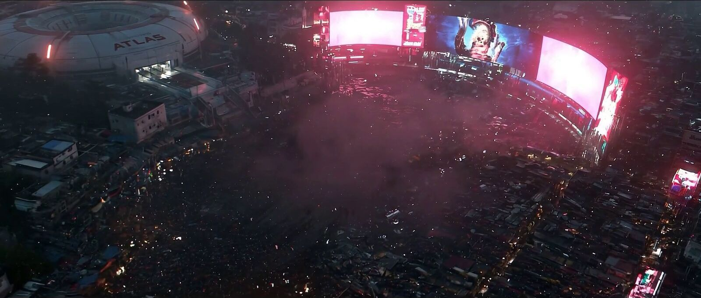
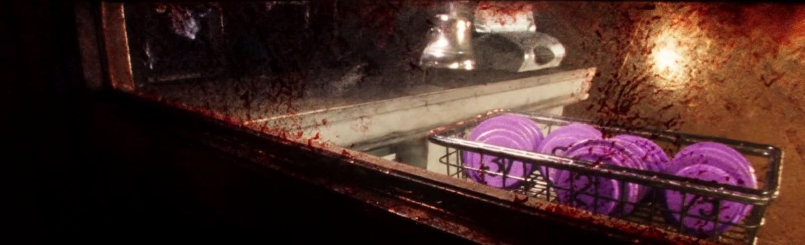
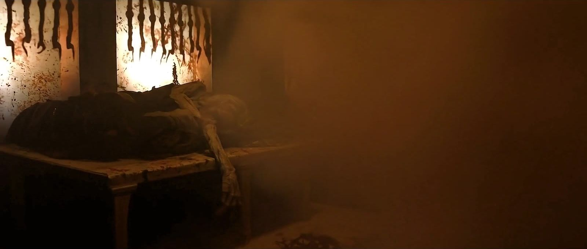

『노인의 시대』
노인이 젊은이의 「하루」를 먹고 사는 세계. 원작 장편소설 『노인의 시대』에서 다섯 편의 AI 영화가 갈라져 나옵니다. 따로 보면 단편, 이어 보면 70분 장편.
The Age of the Old — five AI films in five forms of record, joining into one 70-minute feature. Based on Ahn Sangwook's own novel.

한 세계, 다섯 편
다섯 편은 한 세계의 시간순입니다. 폭동에서 크로노스가 태어나고, 마을이 습격당하고, 포로들이 투기장에 서고, 한 소녀가 실험실에 갇히고, 30년 뒤 한 남자가 지옥을 거슬러 오릅니다. 편마다 기록의 형식이 다릅니다 — 유출 영상, 작전 기록, 방송 하이라이트, 실험 테이프, 생중계.
 1 · OFF THE RECORD올드만 – 기록되지 않은 기억해커가 훔친 유출 영상 · 15분2026.11 완성 · 영진위 제작지원
1 · OFF THE RECORD올드만 – 기록되지 않은 기억해커가 훔친 유출 영상 · 15분2026.11 완성 · 영진위 제작지원
 2 · ON THE RECORD인간사냥 – 침묵의 기록노인군의 작전 기록 · 18분2026.12 완성 예정
2 · ON THE RECORD인간사냥 – 침묵의 기록노인군의 작전 기록 · 18분2026.12 완성 예정
 3 · HIGHLIGHTS옥타곤 – 하이라이트방송에 나간 편집본 · 12분2027.01 완성 예정
3 · HIGHLIGHTS옥타곤 – 하이라이트방송에 나간 편집본 · 12분2027.01 완성 예정
 4 · LAB TAPE안나 – 실험 영상실험실 관찰 테이프 · 15분2027.02 완성 예정
4 · LAB TAPE안나 – 실험 영상실험실 관찰 테이프 · 15분2027.02 완성 예정
 5 · LIVE신곡 – 지옥의 라이브1인칭 강제 생중계 · 10분2026 완성
5 · LIVE신곡 – 지옥의 라이브1인칭 강제 생중계 · 10분2026 완성
각 편은 10~18분 단편으로 완결되어 영화제에 따로 출품하고, 시리즈로 편별 유통할 수 있습니다. 1부 올드만은 지금 영화제 출품 중입니다.
다섯 편을 시간순으로 합치면 70분의 장편이 됩니다. 극장 개봉을 염두에 두고 하나의 24블록 구조로 설계했습니다.
세계
영원을 약속한 치료제 이후, 노인은 젊은이의 「하루」를 먹고 산다.
젊은이의 피는 노인의 시간을 되돌립니다. 효과는 하루. 새벽이 오면 노인은 다시 늙습니다. 그래서 노인들은 매일 밤 젊은이를 사냥하고, 가두고, 기릅니다.
노인군의 계엄 아래 젊은이들은 '포로'가 되어 지하로 보내집니다. 지하는 일곱 개의 마을로 나뉘어 있습니다 — 단테의 일곱 지옥을 본뜬 일곱 죄. 그 심장부에 크로노스가 있습니다. 영화 안에서 그 이름은 불리지 않습니다. 명판에 KRONOS라고 적혀 있을 뿐입니다.
30년 뒤, 이 규칙은 하나도 바뀌지 않은 채 생중계됩니다. 사람은 바뀌어도 규칙은 바뀌지 않습니다.
- 1분노IRA
- 2색욕LUXURIA
- 3나태ACEDIA
- 4질투INVIDIA
- 5교만SUPERBIA
- 6폭식GULA
- 7탐욕AVARITIA

올드만 – 기록되지 않은 기억
영원을 약속한 치료제 이후, 노인들은 껍데기로 버려졌다 — 한 명이 돌아오기 전까지는.
영원을 판 회사는 효과가 끝난 노인들을 처분장에 버렸다. 타지 않은 한 명이 돌아온다. 돌아온 노인은 젊은이의 피가 하루를 되돌린다는 것을 알고 있다. 폭동은 그 하루에서 시작된다.
An anonymous hacker leaks the footage the world was never meant to see: after a pandemic "cure" that promised eternity, the old were discarded as empty shells — until one of them came back.
- 형식 — SF 페이크 다큐멘터리 · 파운드 푸티지. 해커가 훔친 감시 카메라·방송·녹음을 이어 붙였다
- 역할 — 세계의 기원. 폭동과 크로노스의 탄생, 처분장. 다섯 편의 첫 문
- 영화진흥위원회 2026 AI 기반 영화 제작지원작
- 끝 카드 「> SOMEONE IS COMING DOWN.」이 2부로 이어진다






인간사냥 – 침묵의 기록
노인들은 새벽이 오면 늙는다. 아이는 새벽까지 숨을 참아야 한다.
계엄의 밤, 노인군이 젊은이들의 마을을 덮친다. 어른들은 잡혀 포로가 된다. 아이 하나가 환풍구에 숨는다. 숨으면 하루를 산다 — 새벽이 오면 노인들은 다시 늙어 사냥을 멈추기 때문이다.
마을의 열여덟 살 산은 전 총사령관의 아들이다. 5년 전 아버지가 그랬듯 산도 자신이 폭탄이 된다. 「노인군의 계엄은 실패했다.」 아이는 환풍구 틈으로 그것을 본다. 끌려가는 어른 중 하나가 아이를 본다. 입술에 손가락을 댄다. 소리 내지 마. 아이는 새벽까지 숨을 참는다. 포로들은 옥타곤으로 간다.
- 형식 — 온 더 레코드. 노인군의 작전 기록 카메라와 포획 영상. 기록하는 쪽의 시선으로, 기록되는 쪽을 본다
- 원작 — 장편소설 『노인의 시대』 프롤로그 「인간사냥」
- 이 편의 규칙 — 몸의 폭력보다 말의 폭력이 세다. 설명 대사는 없다. 대사는 칼끝처럼 짧고, 카메라는 기록하는 자의 것이다
- 레퍼런스 — 〈에일리언 2〉의 뉴트 · 〈맨 인 더 다크〉
"다들 절대 눈을 마주치지 마. 감정적으로 반응해서도 안 되고."


옥타곤 – 하이라이트
방송에는 하이라이트만 나갔다. 우승자가 어디로 갔는지는 편집됐다.
인간사냥에서 잡힌 포로들이 케이지에 선다. 죽고 죽이는 것이 계속된다. 진 자는 여덟 개의 문 — 일곱 마을과 처분장 — 중 하나로 끌려간다. 이긴 자는 상을 받으러 위로 올라간다. 상은 승자 자신이다. 가장 젊고 가장 강한 피. 크로노스가 그것을 마신다. 방송은 여기서 끝나고, 편집된 부분이 이 편의 마지막 컷이다.
중계 사이로 저항군 리더 아틀라스의 항복 선언이 끼어든다. 젊은이들의 저항은 여기서 무릎을 꿇고, 30년의 규칙이 시작된다. 1편의 '돌아온 노인'이 지배자 크로노스로 처음 나타나는 편이다. 얼굴은 보이지 않는다. 명판 KRONOS와 잔, 그리고 승자를 내려다보는 자리만 보인다.
- 형식 — 방송 하이라이트 편집본. 중계 그래픽, 리플레이, 해설, 광고 사이의 컷. 편집된 것이 곧 이야기다
- 장편 안에서 — 24블록 중 11–15. 12블록이 장편의 중간점. 신곡 1옥의 「9명 남았다」는 이 규칙이 30년째 이어진 것이다
- 레퍼런스 — 〈러닝맨〉(1987) · 〈큐브〉
진 자는 문으로, 이긴 자는 위로. 위에는 잔이 하나 놓여 있다.

안나 – 실험 영상
35년 동안 관찰당한 소녀가 마지막 테이프에서 카메라를 돌린다.
교만의 마을, 닥터 K의 실험소. 안나는 열여섯의 몸으로 늙지 않는다. 살아 있는 백신. 의사들은 35년 동안 그녀의 피를 뽑고, 기록하고, 늙어 간다. 안나는 거의 말하지 않는다. 눈빛이 대사다. 테이프가 쌓이며 하나의 규칙이 드러난다 — 빼앗으면 독, 내어 주면 약.
마지막 테이프. 강제로 피를 뽑아 마신 노인들이 무너진다. 안나는 카메라를 돌린다. 그리고 얼굴 없는 손 하나에게 스스로 피를 내어 준다. 그 손은 물지 않는다. 받는다.
- 형식 — 실험실 관찰 테이프. TAPE 01, 02, 03… 번호가 오를수록 의사들은 늙고, 안나는 그대로다
- 3부 ↔ 4부 — 승자의 피(빼앗긴 희생, 크로노스가 마신다) ↔ 안나의 피(내어 준 희생, 단테가 받는다)
- 장편 안에서 — 24블록 중 16–20. 18블록이 절망의 바닥. 안나의 피를 받은 손이 5부 신곡의 남자다
- 레퍼런스 — 〈엑스 마키나〉 · 〈캐리〉

신곡 – 지옥의 라이브
심장에 자폭장치를 꿰맨 남자가 지하 일곱 층을 거슬러 오른다. 모든 길이 생중계된다.
30년이 지났다. 옥타곤의 규칙은 그대로다. 1옥에서 「9명 남았다」는 방송이 나온다. 단테는 먹지 않는 남자다. 안나의 피를 받은 손이 그의 손이다.
SIGNAL LOST. 그리고 마지막 카드 — 「> SOMEONE IS COMING DOWN. AGAIN.」 올드만의 끝 카드가 30년 뒤에 한 번 더 뜬다. 장편은 여기서 끝나고, 세계는 다시 시작된다.
- 형식 — ● LIVE 강제 송출. 1인칭 바디캠. 말을 못 하는 남자 단테, 종군기자식 V.O.
- 언어 — 일곱 마을, 일곱 죄, 일곱 언어: 한국어 · 이탈리아어 · 독일어 · 일본어 · 중국어 · 러시아어 · 영어
- 2026 BIFAN · SBS A&T AI 영화 교육 과정 작품
- Down here, the old eat the young.


하나의 장편 — 다섯 기록이 24블록으로 연결된다
다섯 편은 각각 완결되지만, 이어 붙이면 한 편의 장편 구조를 이룹니다. 1막은 올드만(15), 2막 전반은 인간사냥(18)과 옥타곤(12), 2막 후반은 안나(15), 3막은 신곡(10) — 합쳐 70분. 편마다 안에서도 같은 24블록을 작게 반복합니다.
- 올드만의 끝 카드 「SOMEONE IS COMING DOWN.」 → 인간사냥의 첫 밤
- 인간사냥의 포로들 → 옥타곤의 선수
- 옥타곤의 패자 → 여덟 개의 문 → 일곱 마을
- 옥타곤의 승자의 피 → 크로노스의 잔
- 안나의 피를 받은 얼굴 없는 손 → 신곡의 단테
- 옥타곤의 규칙 30년 → 신곡 1옥 「9명 남았다」
- 올드만의 끝 카드 → 신곡의 끝 카드 「… AGAIN.」 — 고리가 닫힌다
옥타곤의 승자는 가장 강한 피를 빼앗기고, 안나는 가장 귀한 피를 스스로 내어 줍니다. 같은 피가 한쪽에서는 독이 되고 한쪽에서는 약이 됩니다. 빼앗는 세계와 내어 주는 한 사람 — 다섯 편이 이 거울 하나를 향해 놓여 있습니다.
다섯 가지 기록오프 더 레코드 · 온 더 레코드 · 하이라이트 · 랩 테이프 · 라이브. 누가, 무엇을 위해 찍었는가가 편마다 다릅니다. 관객은 매번 다른 카메라의 자리에 앉습니다.
제작 — 이야기 · 각본 · 편집 · 연출은 사람이, 그림은 AI가
『노인의 시대』는 이야기와 세계관이 먼저 있는 AI 영화입니다. 장편소설, 시나리오, 트리트먼트가 있고, 모든 편은 그림판과 애니매틱으로 먼저 설계한 뒤 생성에 들어갑니다. 장면이 아니라 세계를 만듭니다.
| 기간 | 작업 | 결과 |
|---|---|---|
| 2026.11 | 1부 올드만 마무리 — 색보정 → 음악·음향 → 자막 감수 → 엔딩 크레딧 → DCP · 2~4부 그림판·애니매틱 설계 | 올드만 완성 · DCP |
| 2026.12 | 5부 신곡 마무리 · 2부 인간사냥 생성·편집 (18분) | 신곡 · 인간사냥 완성 |
| 2027.01 | 3부 옥타곤 생성·편집 | 옥타곤 완성 |
| 2027.02 | 4부 안나 생성·편집 → 다섯 편 조립, 장편 70분 | 안나 완성 · 장편 조립 |
| 2027 상반기 | 장편 『노인의 시대』 완성 · 극장 개봉 준비 | 장편 완성 |
| 2027.10 | 라이브 프리미어 (계획) — 다섯 편의 기록 70분 + 낭독·라이브 연주 25분 + 관객과의 대화 | 공연 1회 |
편마다 인물 기준 얼굴을 한 장으로 고정하고, 다섯 편에 걸쳐 같은 얼굴을 유지한다. 올드만에서 잡은 색보정 기준을 다섯 편에 그대로 쓴다.
음악은 감독이 직접 만들고, 믹싱과 사운드는 전문 엔지니어가 맡는다. 신곡은 일곱 언어의 더빙과 자막을 쓴다.
자막 감수, 엔딩 크레딧, DCP까지 편마다 영화제 출품 규격으로 끝낸다. 다섯 편의 크레딧에 「『노인의 시대』 5부작 중 n번째」를 표기한다.
안상욱
연출가. 소설가. 서강대학교 영상학 박사 · 경영학 석사. 주식회사 뉴선스토리 대표.
- 영화 — 올드만(2026 · 영진위 AI 기반 영화 제작지원) · 신곡(2026) · 불사자(2026 · 부라노 AI 영화제 공식 노미네이션) · 벌레(2025 · 테헤란 · 베이루트) · 구인(2022 · 부천 월드 프리미어 · 40여 국제영화제) · 스페인에서(2019 · 마드리드 최우수 외국어 단편)
- 책 — 『신혼록』 · 『인간전』 · 『공룡소』 · 『영화 각색, 10가지 스타일』
- 원작 — 장편소설 『노인의 시대』 The Age of the Old (2027 출간 예정)